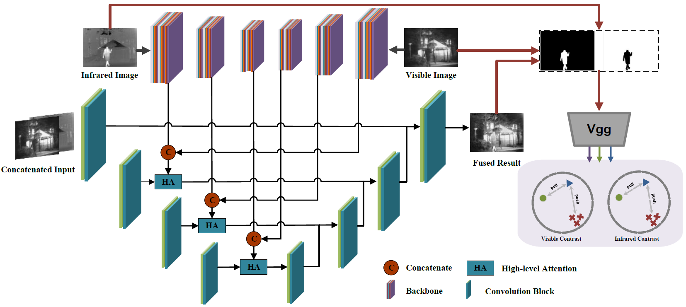

MACFuse: Multi-level Attention-guided Contrastive Learning for Infrared and Visible Image Fusion
The codes are also available.
Contributions
- The proposed dual attention strategy can obtain effective visible and infrared features to intensify the fusion of favorable features, by adopting global attention mechanism.
- To the best of our knowledge, we are the first to introduce contrastive learning to image fusion. By utilizing the mask-based contrastive guidance, the fused image can make use of both rich details from visible images and bright target information from infrared images, thus rendering superior saliency with vivid texture details.
- To guide the optimization of our network, a self-adaptive loss is devised, which automatically adapts to the characteristics of source images in the training phase.
Overall Architecture

Loss Functions
Self-Adaptive Loss
Image fusion targets to provide an information-abundant image with sufficient details and satisfying intensities by combining favorable features of source images. In infrared and visible fusion tasks, we learn to minimize the similarity of source images and the fused image. The loss function is mainly composed of two parts, i.e., the structure similarity loss and the intensity similarity loss, which can be define as: $$ \begin{eqnarray} \mathcal{L_P} = \mathcal{L_S}+\mathcal{L_N} \end{eqnarray} $$ where The $\mathcal{L_S}$ and $\mathcal{L_N}$ denote structure similarity loss and intensity similarity loss. $\mathcal{L_S}$ is measured by the structure similarity index measure (SSIM)~\cite{1284395}, which is widely used to indicate the difference of images based on similarities of contrast, light, and structure. It is given as follows: $$ \begin{eqnarray} \mathcal{L_S} = \sigma^a(1-\mathcal{S}(\mathbf{I}_V,\mathbf{I}_F))+\sigma^b(1-\mathcal{S}(\mathbf{I}_R,\mathbf{I}_F)) \end{eqnarray} $$ where $\mathcal{S}(\cdot)$ denotes SSIM value. $\mathcal{L_M}$ is adopted to strengthen the constraints on the differences of intensity distributions, formulated as: $$ \begin{eqnarray} \mathcal{L_N} = \gamma^a\parallel \mathbf{I}_V-\mathbf{I}_F\parallel_2^2+\gamma^b\parallel \mathbf{I}_R-\mathbf{I}_F\parallel_2^2 \end{eqnarray} $$ where $\parallel\cdot\parallel_2^2$ is Mean Square Error (MSE). In equation (4) and (5), $\sigma=\{\sigma^a, \sigma^b\}$ and $\gamma=\{\gamma^a, \gamma^b\}$ are two pairs of proportional weights which balance the proportion of the visible image and infrared image. They are empirically set to fixed values in normal methods. However, a fixed manner is incapable to make full use of the distinctive details. Therefore, our method takes the best advantage of data characteristics to achieve a self-adaptive loss function by optimizing the image-specific weights $\lambda$ and $\gamma$. For one thing, we expect the fused image to retain more information (e.g., substantial details). Thus, Average Gradient (AG) is applied to optimize the weight parameter $\sigma$ by maximizing the value of the following equation: $$ \begin{eqnarray} {\rm AG} = \frac {1}{HW}(\parallel \nabla_h \mathbf{I}_F \parallel_1 + \parallel \nabla_v \mathbf{I}_F \parallel_1) \end{eqnarray} $$ where the $\nabla_h \mathbf{I}_F$ and $\nabla_v \mathbf{I}_F$ represent the one-order differential of the fused image in horizaontal and vertical direction, respectively. $H$ and $W$ are the height and width. $\parallel \cdot \parallel$ denotes the $\ell 1$ norm. For another, to fuse images with high contrast and clear edges, image Entropy (EN) is employed to update weight parameter $\gamma$. En is formulated as follows: $$ \begin{equation} {\rm EN} = -\sum_{x=0}^{L-1}p_{x}{\rm{log_{2}}}p_{x} \label{EN} \end{equation} $$ where $L$ denotes the grey level of the given image, $p_{x}$ is the probability that a pixel lies in the corresponding grey level.Dual Contrastive Learning
Inspired by previous work on contrastive learning, we propose a contrastive regularization for fusion, based on two pairs of contrast, i.e., visible contrast and infrared contrast. Different from supervised learning with explicit guidance of reference images, there are no clear indications of positive and negative samples for image fusion. Hence, the core of applying contrastive learning lies in how to construct positive and negative pairs. In this letter, we argue that the desarible features served as contrast samples are included in source images. Concretely, for an infrared image, its salient infrared target is of interest while the rest part should be discarded. Similarly, in a visible image, the background with vivid textural details is highly demanded while the dark foreground part is less desirable. For a fused result, we target to achieve two objectives based on two groups of contrast: To improve the saliency of foreground objects, the corresponded regions from the infrared image and the visible image are utilized as positive and negative samples, respectively. At the same time, in the case we want to stress the vivid background details in the fused result, we set the visible image as positive while infrared image as negative samples. For the latent feature space, we select the commonly used VGG-19, denoted as $G$, with pre-trained weights. Let $\mathcal{M}$ denote the salient mask of foreground and $\mathcal{\overline{M}}=1-\mathcal{M}$ the salient mask of background. For a fused result, we aim to contain more information of foreground objects from the infrared image instead of the same region from the visible image. From this sense, the posive and negative samples for improving foreground saliency, which we call infrared contrast, should be ${\rm I}_{R}\odot \mathcal{M}$ and ${\rm I}_{V} \odot \mathcal{M}$. We form the loss function of this goal as follows: $$ \begin{equation} \mathcal{L}_{ir} = \sum_{n=1}^{N}w_{i}\frac{\parallel{\mu}-{\mu}^{+}\parallel_{1}}{\sum_{m}^{M}\parallel{\mu}-{\mu}_{m}^{-}\parallel_{1}} \label{eq5} \end{equation} $$ where $\mu$ denotes the foreground part in the fused image, which is defined as $\mu={\rm I}_{F}\odot\mathcal{M}$. $\mu^{+}$ and $\mu^{-}$ are the positive and negative samples, formulated as $\mu^{+}={\rm I}_{R}\odot\mathcal{M}$, $\mu^{-}={\rm I}_{V}\odot\mathcal{M}$, respectively. Likewise, for the background part, we hope to retain more vivid details from visible images, treating background of the infrared image as negative samples, while the visible image background as potive samples. Therefore, the object function for visible contrast can be given as: $$ \begin{equation} \mathcal{L}_{vis} = \sum_{n=1}^{N}w_{i}\frac{\parallel{\nu}-{\nu}^{+}\parallel_{1}}{\sum_{m}^{M}\parallel{\nu}-{\nu}_{m}^{-}\parallel_{1}} \end{equation} $$ where $\nu$ denotes the background part in the fused image, defined as $\nu={\rm I}_{F}\odot\mathcal{\overline M}$. $\nu^{+}$ and $\nu^{-}$ are the positive and negative samples, formulated as $\nu^{+}={\rm I}_{V}\odot\mathcal{\overline M}$, $\nu^{-}={\rm I}_{R}\odot\mathcal{\overline M}$, respectively.Expermental Settings
Datasets
The infrared and visible image pairs we utilize to showcase the prevelege of our method are collected from the TNO and the RoadScene, which are publicly available. The above mentioned datasets are clarified below.Training details
Our entire fusion framework is trained on the TNO dataset through two phases: training and finetuing. In the traing stage, We first select 46 pairs of images and convert them to grayscale ones. To make full use of the gradient and entropy of each image in the proposed self-adaptive training, we crop 1410 patches of size 64*64 from them. Then, the training patches are normalized to [-1, 1] and fed into our network. We apply Adam as the optimizer and set the learning rate to 0.0001. The batch size is 10 and the epoch in this phase is 10. In the finetuning phase, we adopt 18 images with salient masks from TNO, and crop them into 1410 images of size 64*64 as we do in the training stage. For the contrastive learning, we use one positive sample with three negative samples (one corresponded with the positive patch and two ramdomly picked up from other negative patches). The network is finetuned for 5 epochs, the optimizer, learning rate and batch size settings are the same as that in the training phase. .Representative Results

Visualization of the proposed attention module

Reach me
E-mail: junko.lin@yahoo.com
Acknowledgement
This work is partially supported by the National Natural Science Foundation of China (Nos. 61922019, 61733002, 61672125, and 61772105), LiaoNing Revitalization Talents Program (XLYC1807088), and the Fundamental Research Funds for the Central Universities.